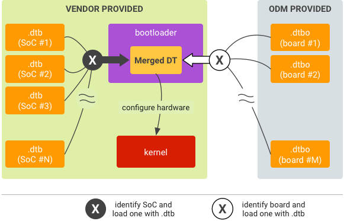

Many SoC vendors and ODMs support the use of multiple DTs on a device, enabling one image to power multiple SKUs/configurations. In such cases, the bootloader identifies the hardware and loads the corresponding DT at runtime:
Note: Using multiple DTs is not mandatory.
To add support for multiple DTs to the DTO model, set up a list of main DTs and another list of overlay DTs.

The bootloader should be able to:
Only one main DT and one overlay DT are selected for use at runtime, and the selected pair must be compatible.
To partition, determine a bootloader runtime-accessible and trusted location
in flash memory to store the DTBs and DTBOs (bootloader must be able to locate
these files in the matching process). Keep in mind that DTBs and DTBOs can not
exist in the same partition. If your DTBs/DTBOs are in the
dtb/dtbo partition, use the table structure and header
format detailed in DTB/DTBO
Partition Format.
To run:
.dtbo from storage into memory..dtb with the .dtbo to be a merged
DT.